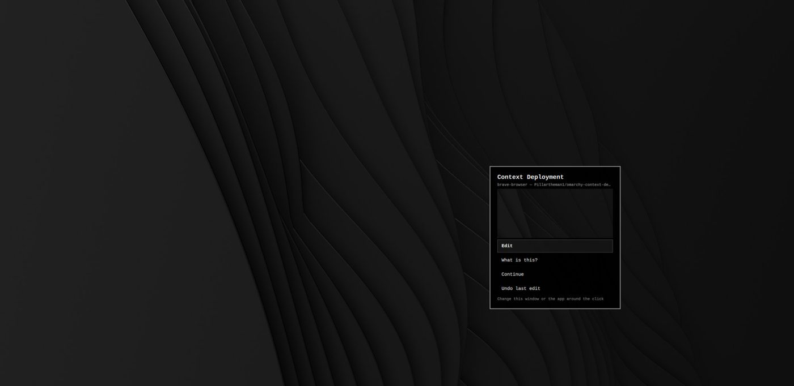

Context Deployment
An open-source Omarchy Linux plugin: Super+right-click anything on the desktop to have your AI agent edit it in context.
Sole developer · Sep 2026 – present
Problem
Asking an AI agent to change your desktop means describing in words what you're looking at. The agent can't see what you mean.
Constraints
- Run inside the Omarchy shell as a plugin (unsandboxed, so it has to be safe)
- Keep Super+right-drag working for window resizing
- Work with whatever default agent the user has set
- Every change must be reversible
Key result
Released as v1.2.0 (MIT), installable with one command
STAR
Situation
Omarchy users customize their desktop through config files and AI agents, but prompts carry no visual context.
Task
Design and build a plugin that sends exactly what's under the cursor to the user's agent.
Action
- QML overlay menu: Edit, What is this?, Dictate, Continue, Undo last edit
- Python context capture: finds the monitor, window or bar under the click and crops a 512×320 screenshot around it
- Session layer: snapshots config before each editing action so Undo can restore it
- Click vs drag binding so window resizing still works
Result
v1.2.0 released, with an install guide. 11 unit tests on the helper functions. No usage metrics yet.
Design decisions
| Decision | Options / choice | Tradeoff |
|---|---|---|
| Crop around the cursor | Full screenshot vs a 512×320 crop | Less noise for the agent; context outside the crop is lost |
| Snapshot before edits | Rely on git/manual backups vs automatic config snapshot | Extra disk writes, but one-click Undo |
| Use the default agent | Hard-code one agent vs use the user's default | Works with any agent; behavior depends on the agent |
Testing & iteration
- 11 unit tests for the context and session helpers
- Read-only 'What is this?' mode to check the context before letting the agent edit
Visuals
